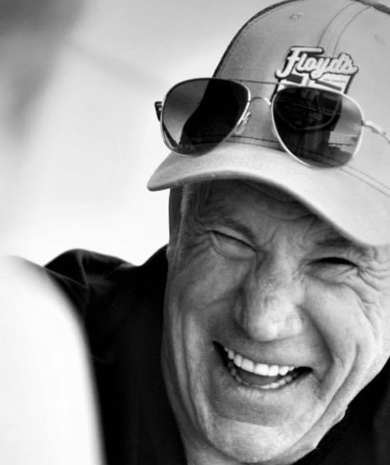
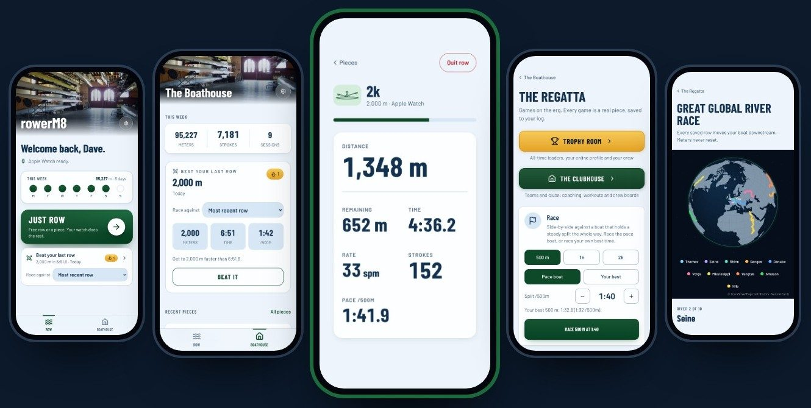

I call bike races for a living. I also host two cycling podcasts, emcee events with my own PA, and I'm building a rowing app.
Fort Collins, Colorado

rowerM8 · BETA CLOSING SOON
Your watch counts every stroke and the app turns it into real meters, pace and splits. Race your last row, track your weeks, work your way down ten of the world's great rivers.
If you have an Apple Watch and a Concept2, I've got a few beta spots left.
Get in at rowerm8.com
I've spent more than twenty years announcing the biggest bike races in the country. These days I'm taking on more local events too, and I bring my own professional sound system.
Races I've called
My interview show. One guest, one long conversation about racing and the people in it.
Listen on Apple PodcastsiHeartAmazon MusicPodbean
Zwift and indoor cycling, talked through with Shane Miller (GP Lama) and Eric Schlange.
Listen on Apple PodcastsSpotifyOvercast
Send me the date, the location and the kind of event, and I'll get back to you with availability.